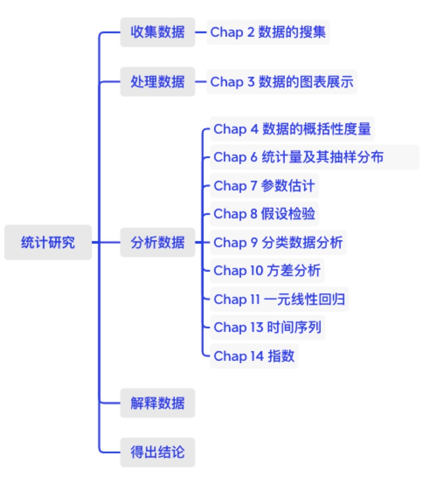
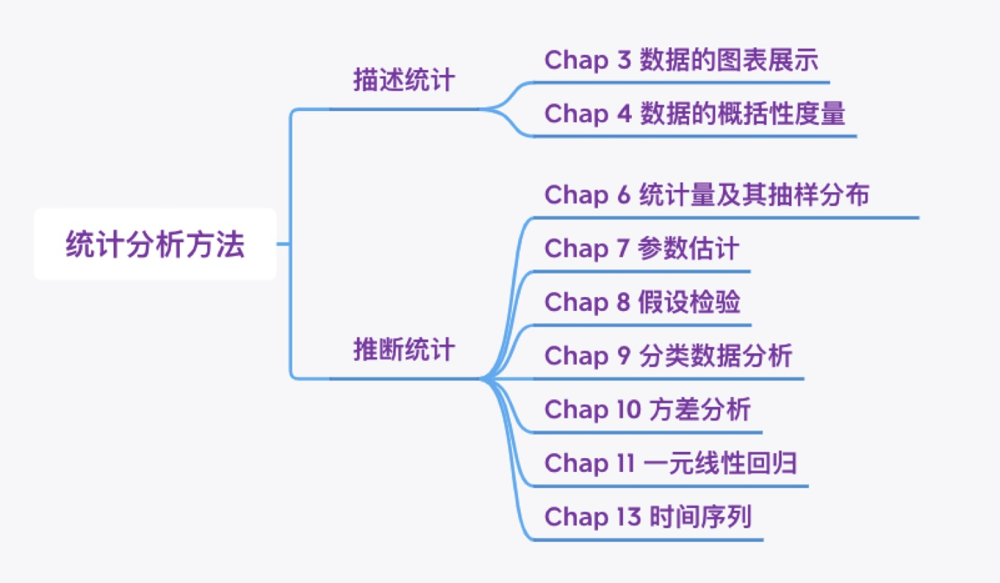

第1章 导论
第1章 导论
1.1 统计分析步骤
1.2 课程概况
1.3 统计数据的类型
1.4 基本概念
1.1 统计学
- 统计学是收集、处理、分析、解释数据并从数据中得出结论的科学。
1.1 统计分析的步骤
 ## 1.1 统计方法分类
 ## 1.1 应用举例：基金经理特征
- 性别？
- 年龄？
- 学历？
- 专业？
- 从业经历？
- 海外经历？
- 资格证书？
- Chartered Financial Analyst (CFA)
- Financial Risk Manager (FRM)
- 业绩表现？
1.1.1 收集数据
- 问卷调查
- 数据库
- CSMAR
1.1.2 处理数据
将数据转化为结构化表格的形式，其中每一行代表一个观测单元，每一列代表一个变量。
检查数据的完整性和合理性，包括查看是否存在重复个案、缺失值、异常值，以及将文本转化为数值代码。
详见：1.4 Excel中的数据清洗工具
1.1.3 分析数据
描述统计：利用表格和图形对数据进行呈现，计算均值、中位数、标准差等描述性统计量。
推断统计：根据样本数据对总体特征进行推断。
1.1.3 分析数据
第3章-第4章：描述统计方法
第6章至第8章：推断统计准备知识
第9章至第11章：推断统计方法
第13章：时间序列
全书框架

1.1.4 提炼结论
- 运用统计分析方法得到的发现进行梳理和归纳，从中提炼出有价值的结论。
1.2 Excel的统计分析工具
1.2.1 图表工具
1.2.2 函数工具
1.2.3 数据分析工具
1.3 Excel常用技巧
1.3.1 Excel的快捷键
1.3.2 单元格填充柄
1.3.1 Excel的快捷键
基础操作
光标定位
范围选择
编辑计算
1.3.2 单元格填充柄

1.4 Excel的数据清洗工具
- 1.4.1 剔除重复个案
- 1.4.2 剔除有缺失值的个案
- 1.4.3 英文字母的大小写转换
- 1.4.4 删除多余的空格
- 1.4.5 观测值的批量替换
- 1.4.6 文本分列
- 1.4.7 以文本形式存储的数字的转化
- 1.4.8 快速填充
- 1.4.9 异常值和缺失值的识别
- 1.4.10 数值代码转换为文本
本章总结